How theory works
- Introduction to sociological theory
- Writing about theory
- The three theoretical paradigms
- Accessibility, accommodations, and privacy
Theory gives us different ways to explain the same social world. This book makes those explanations visible—showing what each theory asks, how its parts connect, and what it helps us notice.
Start with the umbrella: the three major perspectives organize the detailed theories that follow, but theorists sometimes contribute ideas that reach across more than one perspective.
The book begins with the Big Three, then groups specialized theories by what they explain. This keeps developmental, relationship, and population theories from being forced under a sociological perspective where they do not fully belong.
A strong theory paragraph does more than name a theorist. It uses a concept as a tool for explaining evidence.
Identify the theory or perspective that will guide the explanation.
Explain the specific idea in your own words before applying it.
Use a concrete detail from the case, reading, image, or data.
Show how the evidence demonstrates the theory’s mechanism.
State what the theory reveals and what another lens might add.
A paradigm is a broad framework that directs attention. The same event can produce three different explanations because each perspective begins with a different question.
Family shapes readiness for school; school prepares people for work; work supplies resources that affect families and schools.
Society is a system of interdependent parts. Institutions persist when they contribute to stability, adaptation, or shared life; they can also produce dysfunctions.
Key figures: Durkheim, Merton, Parsons, Davis and Moore
Unequal control of resources allows some groups to shape rules, opportunities, and outcomes for others.
Society contains groups competing over limited resources, authority, and cultural influence. Institutions may preserve inequality while also becoming sites of resistance and change.
Key figures: Marx, Weber, Mills, Mosca, Wallerstein
People exchange symbols, interpret one another’s reactions, and carry those meanings into the next interaction.
People act based on meanings learned and revised through social interaction. Attention stays close to symbols, identities, labels, performances, and definitions of situations.
Key figures: Mead, Cooley, Blumer, Goffman, Berger and Luckmann
| Perspective | Level | Society resembles | Especially notices | Possible blind spot |
|---|---|---|---|---|
| Functionalism | Mostly macro | An interdependent system | Functions, stability, solidarity, dysfunction | Can underestimate inequality and change |
| Conflict | Mostly macro | An unequal contest | Power, resources, domination, resistance | Can understate cooperation and shared values |
| Interactionism | Mostly micro | An ongoing conversation | Meaning, identity, symbols, labels | Can understate large structures |
Consider a school dress code. A functionalist may ask how common rules support order and belonging. A conflict theorist may examine whose standards shaped the policy and which students are disciplined most often. A symbolic interactionist may study how clothing communicates identity and how being labeled “disruptive” changes later interactions. The perspectives do not merely offer three opinions; they direct researchers toward different evidence.
No single theory explains initiation, continued use, dependence, recovery, drug selling, or social reactions. Biological and psychological theories focus on vulnerability, learning, coping, and decision-making. Sociological theories add peers, bonds, labels, opportunity structures, inequality, markets, law, and power. Strong analysis identifies the mechanism supported by the evidence rather than attaching one theory to every person who uses a drug.
Which individual processes can increase vulnerability or protection without turning risk into destiny?
Biological theories examine inherited variation, brain reward and stress systems, metabolism, tolerance, withdrawal, and individual sensitivity to a substance. Genetic influence is usually polygenic and probabilistic: many small differences interact with age, trauma, availability, learning, and protective relationships.
Repeated exposure can produce neuroadaptation, but biology alone cannot explain why a person first encounters a drug, which drugs are available, how use is interpreted, or whether treatment is accessible.
Psychoanalytic approaches interpret use as an attempt to manage conflict, anxiety, or unmet needs. Personality approaches study traits such as sensation seeking or impulsivity, but no single profile identifies everyone who develops problems. Behavioral theories emphasize reinforcement: pleasure, social approval, relief from withdrawal, or escape from distress can strengthen use. Cognitive theories focus on expectations, attention, learned associations, perceived control, and choices among rewards.
Recovery can become more likely when alternative activities provide greater meaning, belonging, competence, or immediate reward and when cues and barriers are changed.
How are drug-use definitions, techniques, and expected consequences learned in groups?
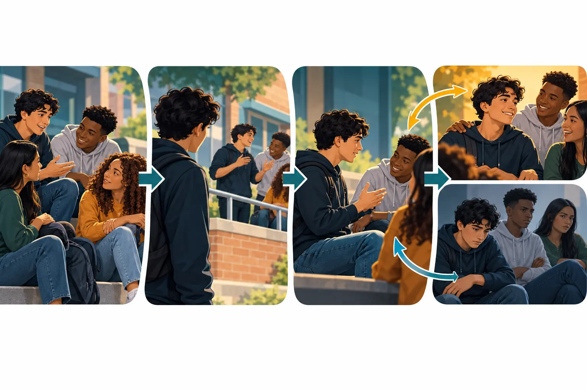
The same peer group can transmit meanings, demonstrate behavior, and respond to what happens next. These are related processes, but they should not be collapsed into the claim that peers mechanically cause behavior.
Sutherland’s differential association theory argues that deviant behavior is learned through communication in intimate groups. People learn techniques, motives, rationalizations, and attitudes. Involvement becomes more likely when definitions favorable to law violation outweigh definitions unfavorable to it. Associations differ in frequency, duration, priority, and intensity, so an admired long-term friend may matter more than a passing contact.
Akers’s social learning theory extends this model with differential reinforcement, imitation, and definitions. A person observes models, anticipates social or chemical rewards, encounters costs, and revises expectations. A pleasant first experience may reinforce use; an unpleasant one may discourage it. Peer approval can reinforce behavior even when the pharmacological effect is mixed.
Select a part of the process to see what evidence a sociologist would look for.
How can people learn to recognize a drug effect as meaningful, and how do social reactions create deviant identities?
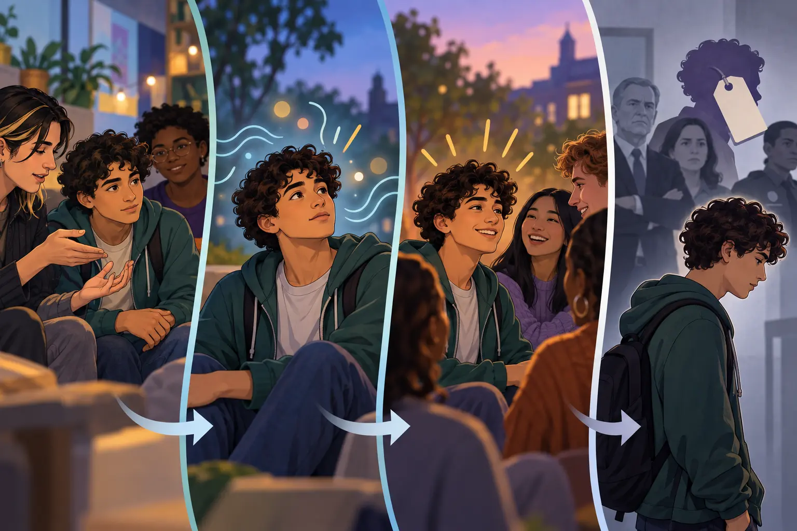
Becker’s two contributions connect without becoming identical. Interaction can teach a person how to experience and interpret an act; institutions and audiences then decide which acts and people receive a deviant label.
The person must use the substance in a way that produces an effect.
Experienced users help identify ambiguous bodily sensations as being “high.”
The person learns to interpret sensations as enjoyable or desirable enough to repeat.
Becker used this process to show that a drug’s chemical action does not automatically supply its social meaning. Culture and interaction teach people what to notice and how to interpret it. His broader labeling theory shifts attention from the act to social reaction: groups create rules, apply them selectively, and may transform a violation into a master status that overshadows other identities.
Moral entrepreneurs, lawmakers, professionals, media, and institutions participate in defining which behaviors become prohibited and which people are watched. The same act can be interpreted differently across time, place, and status groups.
Primary deviance refers to an initial rule violation that may have little effect on identity. Surveillance and enforcement are unequal, so similar conduct does not guarantee similar discovery or consequences.
Once labeled, a person may be treated primarily as an “addict,” “criminal,” or “troublemaker.” Exclusion from school, work, housing, or relationships can narrow conventional opportunities while other identities become harder for audiences to see.
Secondary deviance occurs when social reaction and the labeled identity influence later behavior. This is not inevitable: people may reject the label, conceal it, find supportive communities, receive treatment, or organize to change the rule.
Open each case and decide which process the evidence supports before reading the explanation.
A student violates a campus rule once, is not discovered, and continues to think of herself primarily as a successful student.
Primary deviance: the rule violation has not reorganized identity or produced an ongoing deviant role.
After being publicly labeled a “drug offender,” a student loses housing and employment, is excluded by conventional peers, and increasingly associates with people who accept that identity.
Secondary deviance: social reaction and the imposed identity help shape later opportunities, relationships, and behavior.
A person receives a stigmatizing diagnosis but finds treatment, supportive relationships, and an advocacy community that separates the condition from the whole self.
Label resistance: receiving a label does not guarantee secondary deviance. People can reinterpret, challenge, or compartmentalize it.
Labeling is less likely to reshape identity when a person’s important reference group rejects the larger society’s judgment. Members may value the group’s norms more than the standards of outsiders, provide an alternative status system, and reinterpret the label as evidence of loyalty, courage, authenticity, or persecution. Countercultures, tightly bonded subcultures, political movements, religious communities, and some drug-using groups can therefore protect members from shame attached by outsiders.
The labeling audience lacks legitimacy in the person’s eyes; the group supplies belonging and an alternative identity; fellow members normalize or praise the conduct; and sanctions from outsiders may strengthen group solidarity.
Even when the person rejects the meaning of a label, institutions may still impose material consequences through arrest, school discipline, employment barriers, housing exclusions, or medical records. Symbolic rejection does not erase structural power.
How can people violate a rule while continuing to see themselves as basically conventional?
The visual does not depict a permanently deviant person. It shows how situational explanations can reduce guilt long enough for an act to seem acceptable while conventional values remain generally intact.
Neutralization theory argues that many people do not reject conventional morality altogether. They temporarily suspend it through justifications that reduce guilt and make a prohibited act possible. Matza described drift: movement between conventional and deviant action rather than permanent membership in a deviant identity.
“I had no real choice; circumstances or other people pushed me.” The person presents the action as outside meaningful control.
“No one was actually hurt, so the rule should not matter.” Harm is minimized, delayed, or defined so narrowly that consequences disappear from view.
“They deserved it” or “there is no legitimate victim.” Responsibility is shifted by redefining the harmed person as an offender.
Attention shifts to hypocrisy or wrongdoing by authorities. The criticism may contain truth while still functioning as a way to avoid evaluating the original act.
Loyalty to friends, family, or a group is placed above the law or institutional rule: “I did it for them.”
Why do many people resist deviance even when pressures, opportunities, or temptations are present?
Containment theory distinguishes inner containment—self-control, frustration tolerance, responsibility, realistic goals, and a stable self-concept—from outer containment—supportive relationships, supervision, consistent limits, belonging, and meaningful roles. Social pushes such as exclusion or frustration and pulls such as peer approval or market opportunity do not produce the same result when containment differs.
Containment is not isolation. Supportive bonds can help a person internalize reasons and capacities for regulation.
Caring about the expectations of parents, teachers, partners, mentors, or friends makes those relationships consequential.
Time and effort invested in education, work, reputation, or future plans create a stake in conformity.
Participation in meaningful conventional activity can reduce opportunity for deviance and deepen belonging.
Seeing rules and obligations as legitimate strengthens restraint; belief can weaken when institutions appear arbitrary or unjust.
Do peers create similarity in drug use, or do similar people choose one another?
Kandel’s model is reciprocal. Earlier attitudes affect selection, interaction changes definitions and reinforcement, and changed behavior shapes later peer choices. The branching paths emphasize probability, historical context, and multiple possible outcomes.
Kandel’s research treats peer influence as a reciprocal process. Selection occurs when people choose friends partly because they already share attitudes, activities, or use patterns. Socialization occurs when interaction within the group changes definitions, opportunities, expectations, and behavior. Similarity may therefore exist before friendship and grow after it.
Kandel also identified common sequences in adolescent drug involvement—often beginning with legal substances and moving toward cannabis and then, for a smaller group, other illicit drugs. A stage indicates an elevated probability and changing opportunity, not an inevitable gateway effect. Most people at one stage do not automatically progress, and historical period, local markets, policy, family, culture, and cohort alter the sequence.
What if access to illegal opportunities is unequal just as access to legitimate opportunities is?
Cloward and Ohlin extended Merton’s strain theory. Cultural goals may be widely promoted while legitimate means remain unequal, but successful deviance also requires skills, contacts, roles, protection, and access. Neighborhood organization influences which illegitimate opportunity structures are available.
The theory therefore joins strain to subculture: blocked opportunity creates pressure, while local networks shape the form an adaptation may take.
Who faces drug-related risk, whose use is medicalized or criminalized, and who has the power to define the response?
Feminist theories examine gendered trauma, caregiving, stigma, medical treatment, reproduction, employment, and pathways into and out of use. An intersectional analysis asks how gender combines with race, class, sexuality, disability, and citizenship.
Conflict theories ask how lawmakers, corporations, medical institutions, police, and moral entrepreneurs shape definitions and distribute costs and profits. Labeling theory explains how surveillance and sanctions can create master statuses and secondary deviance even when behavior is similar across groups.
Social-structural explanations connect drug patterns to segregation, unemployment, housing instability, healthcare, transportation, commercial marketing, prescribing systems, and drug-market organization. These conditions do not erase agency; they distribute choices and consequences unequally.
Subcultural theories add meanings, rituals, identities, and recruitment within groups. A substance may operate as medicine, recreation, rebellion, sacred practice, occupational aid, or marker of belonging depending on the setting.
Structural functionalism examines society as a system whose interdependent parts contribute to continuity, adaptation, and social order. Durkheim established its central questions; Merton refined the perspective so sociologists could study intended, unintended, helpful, and harmful consequences without assuming that every social pattern benefits everyone.
What holds people together, and what happens when the social bonds and moral rules connecting them weaken or become extreme?
Durkheim argued that society is more than a collection of individuals. It has patterns, rules, institutions, and shared meanings that shape people from outside themselves. By studying these social facts, sociologists can explain how social organization affects even deeply personal experiences.
Social facts are ways of acting, thinking, and feeling that exist outside any one person and exert social pressure. Language, laws, money, school schedules, religious practices, and expectations about family life were already present before we entered society. We learn them, depend on them, and may be sanctioned when we violate them.
Mechanical does not mean primitive or unintelligent, and organic does not mean automatically harmonious. Durkheim’s distinction concerns the primary basis of social cohesion.
Anomie is a social condition of weakened regulation or normlessness. It can occur during economic collapse, sudden prosperity, migration, institutional disruption, or other rapid change. The problem is not simply that an individual “has no morals”; the social framework that once regulated expectations has become less reliable.
Durkheim studied suicide rates to show that even an intensely personal act varies with social conditions. His typology uses two social dimensions: integration, or connection to groups, and regulation, or the strength of rules and limits.
Integration is too low
Weak group attachment and isolation reduce the sense of belonging and shared purpose.
Integration is too high
The individual self is subordinated to the group, and self-sacrifice may be treated as an obligation.
Regulation is too low
Rapid change or disruption weakens rules and limits, making expectations unstable.
Regulation is too high
Extreme constraint and blocked possibility create an oppressive sense that the future cannot change.
Low and high integration explain egoistic and altruistic patterns; low and high regulation explain anomic and fatalistic patterns.
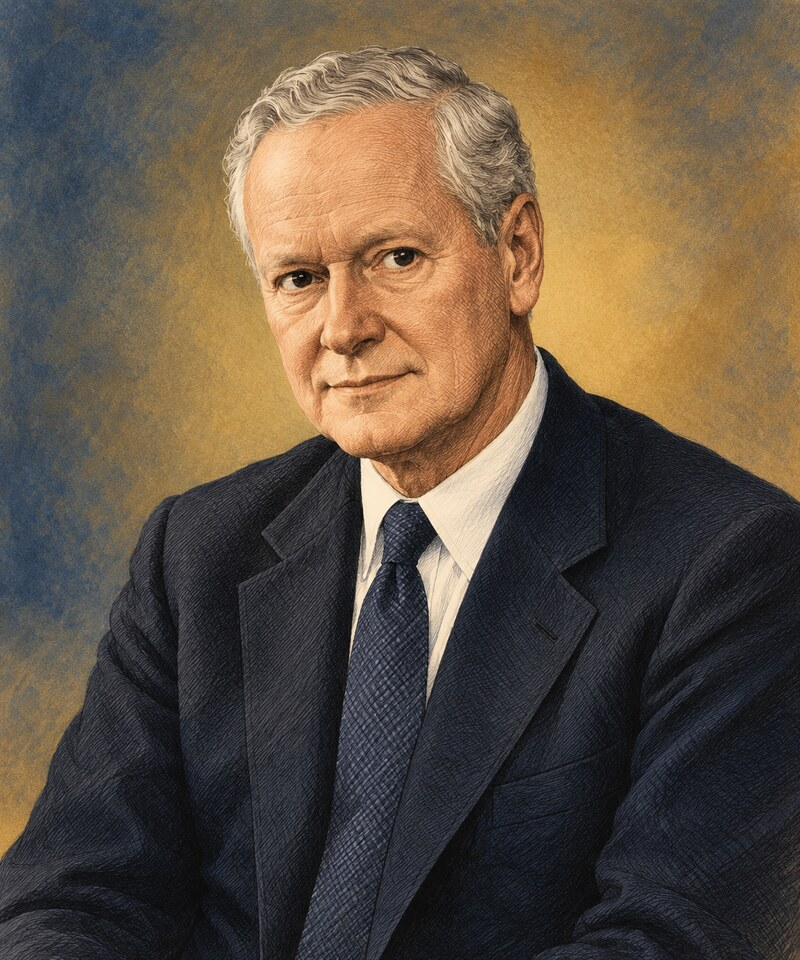
How can sociologists study the consequences of social arrangements without assuming that everything is intended, visible, or beneficial?
Merton made functional analysis more precise and testable. He emphasized middle-range theories: explanations focused enough to be examined with evidence but broad enough to connect separate cases. He also showed how a society’s celebrated goals can produce deviance when legitimate opportunities are distributed unequally.
An intended, recognized consequence that helps a social system or group.
Example: A college course intentionally teaches disciplinary knowledge.
An unintended or unrecognized consequence that helps a social system or group.
Example: The course unintentionally creates friendships and professional networks.
An unintended or unrecognized consequence that harms, disrupts, or disadvantages part of a social system.
Example: Technology requirements unintentionally exclude some students.
A consequence can help one group while harming another. Calling something functional does not mean it is morally good, and identifying a dysfunction does not mean the entire institution has no value.
Cultural goals are widely valued outcomes a society encourages people to pursue. Institutionalized means are the socially approved routes for reaching them. When people are strongly encouraged to pursue goals but encounter blocked legitimate opportunities, the gap creates strain. Merton described five adaptations; these are analytic patterns, not permanent personality types.
Accept goals · Accept means
Continue pursuing approved success through approved pathways, even when progress is difficult.
Accept goals · Reject or bypass means
Keep the goal but use unapproved means, such as fraud or drug selling, when legitimate routes appear blocked.
Reduce or abandon goals · Accept means
Give up the larger success goal while continuing to follow rules and routines precisely.
Reject goals · Reject means
Withdraw from both approved goals and approved means. Drug use alone is not sufficient evidence of retreatism.
Replace goals · Replace means
Reject the existing goals and means while advocating and building a different social arrangement.
These theories answer related but different questions. They should be layered rather than treated as competitors explaining exactly the same step.
Where does pressure come from? Social structure promotes goals while distributing legitimate opportunities unequally, creating strain and adaptations.
What contains pressures and pulls? Inner controls such as self-concept and responsibility combine with outer controls such as supervision, support, and clear expectations.
What bonds people to conventional society? Attachment, commitment, involvement, and belief raise the social stakes of deviance and strengthen connection.
Pressures and pulls → outer controls → inner controls
Inner controls include a stable self-concept, self-control, responsibility, frustration tolerance, and goal direction. Outer controls include supervision, supportive relationships, meaningful roles, consistent rules, and reasonable limits.
Containment does not erase structural strain. It can buffer the pressure and help a person resist immediate pushes and pulls.
Connection increases the stakes of deviance and supports self-regulation
Hirschi argued that people are less likely to engage in delinquency when four bonds connect them to conventional people, goals, activities, and moral expectations. The bonds do not make deviance impossible; they give people more relationships, investments, routines, and principles to protect.
The emotional bond to parents, teachers, mentors, and other significant people
Caring about others creates sensitivity to their expectations. A person may pause before acting because the relationship, trust, and respect of people they value could be damaged.
Protective connection: “How will this affect the people I care about?”
The investment already made in education, work, achievement, reputation, and future plans
The more a person has worked toward conventional goals, the more there is to lose through behavior that could disrupt school, employment, opportunities, or standing in the community.
Protective connection: “What future have I worked to build?”
Time and energy devoted to conventional responsibilities and activities
Schoolwork, employment, sports, caregiving, volunteering, and organizations structure time and connect people to supervised roles. Involvement works through routine and opportunity, not merely by keeping someone “too busy.”
Protective connection: “Where are my time, responsibilities, and energy already invested?”
Acceptance that shared rules and moral expectations are legitimate
When people view laws and norms as reasonable and binding, they are more likely to regulate their own behavior even when no authority figure is present. Belief can weaken when rules appear inconsistent, unfair, or selectively enforced.
Protective connection: “Do I believe this rule is legitimate and worth following?”
Applied to drug involvement: blocked educational or employment opportunities may create strain, but they do not mechanically cause drug use. Inner and outer containment and the strength of social bonds can buffer pressures. Peer learning, available drug markets, personal history, and biological or psychological factors may also matter. Choice occurs within social conditions; explaining constraint is not the same as excusing harm or blaming the individual.
How does society respond when illness temporarily limits a person’s ability to perform ordinary roles?
Parsons treated illness as more than a biological condition. It also creates a socially organized role with expectations for the ill person, family members, employers, and medical professionals. Because illness may interrupt work and other responsibilities, the sick role provides a legitimate—but conditional—way to step back from normal duties and receive care.
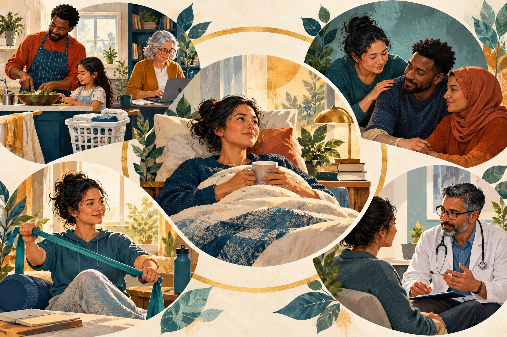
The person may be excused from some ordinary roles when the condition warrants it.
Illness is not treated as something the person can end through willpower alone.
The person is expected to regard illness as undesirable and, when possible, work toward improved health.
The person is expected to obtain appropriate care and cooperate in a reasonable treatment process.
Why do societies attach unequal rewards to different social positions—and does inequality actually serve the whole society?
Kingsley Davis and Wilbert Moore argued that stratification can help a society place people into positions, motivate them to complete demanding preparation, and encourage performance in roles considered especially important. In their model, positions that are difficult to fill or require scarce training receive greater income, prestige, or authority.
The theory’s key claim: some unequal rewards are functionally necessary because they motivate qualified people to prepare for and perform demanding roles.
The critical question: who decides which roles are most important, and do rewards reflect contribution—or inherited privilege, bargaining power, discrimination, and control over resources?
No one theory fully explains stratification. Davis and Moore identify a possible role-allocation function; Mosca identifies the organizational advantage of ruling minorities; Lenski explains how technology, scale, and surplus change the room available for both coordination and unequal appropriation.
Durkheim adds a fourth question: how does specialization hold people together? His answer is organic solidarity—interdependence among unlike roles—not a claim that every existing reward is fair or necessary.
Mechanism: societies rank positions, attach rewards, and motivate people to acquire scarce training and perform demanding roles. The argument depends on assumptions that rewards really track functional importance and that access to training is sufficiently open.
Mechanism: a coordinated minority can rule a much larger but less organized majority. Those who occupy strategic institutions help determine which positions count as important and how rewards are distributed.
Condition: technology and productivity affect surplus. With little surplus, necessity constrains distribution; with greater surplus, elites have more resources to capture, though institutions and collective power still shape the result.
Melvin Tumin argued that stratification can restrict the talent pool by denying disadvantaged people access to education and opportunity. Rewards may also reflect power and tradition rather than a position’s genuine importance. Sanitation workers, caregivers, and farm laborers can be essential while receiving less prestige and income than occupations with stronger market power.
Conflict theory asks how unequal control of resources, institutions, and decision-making shapes society. It focuses on competing interests, the ability of powerful groups to define rules, and the ways inequality is reproduced or challenged. Social order may reflect agreement, but it may also reflect dependency, persuasion, or unequal power.
How does ownership of productive resources create class relationships, conflict, and social change?
Marx argued that people must organize production before they can meet their needs. The way a society produces goods—and especially who owns productive property—shapes class relations, political institutions, and dominant ideas. Under capitalism, owners purchase labor power, workers sell their capacity to work for wages, and conflict grows from their opposing interests over control, working conditions, and the value created through labor.
Historical materialism emphasizes how productive capacities and property relations shape social institutions and historical change. Marx did not say that economics mechanically causes every belief or event. His central claim was that class relations rooted in production create powerful constraints and recurring conflicts.
The capitalist ownership class controls major means of production—factories, firms, land, investment, and productive property—and hires wage labor.
The wage-working class does not own enough productive property to live from ownership and therefore sells labor power for wages.
Marx used this contested term for people largely detached from stable wage labor and organized production. It is historically specific and should not be used as a label for all poor or unemployed people.
Workers can produce more value during the working day than they receive in wages. Owners control the resulting surplus. For Marx, exploitation describes this structural relationship; it does not require an individually cruel employer.
When workers lack control over production, they may become separated from the product of their work, the activity of working, other people, and their own creative capacities. Alienation is about the organization of labor, not merely disliking a job.
False consciousness is a later Marxist term for understandings that obscure shared class interests or make unequal arrangements appear natural, inevitable, or equally beneficial. It should not be used to call individuals unintelligent.
Class consciousness develops when people recognize a shared relationship to production, identify common interests, and organize collectively. Marx distinguished a class that exists structurally from a class capable of acting for itself.
Marx’s “opium” metaphor was not only an insult toward belief. In his nineteenth-century context, opium could soothe pain while leaving the source of pain untreated. Religion can express suffering and provide meaning, comfort, and community; it can also legitimate authority or promise relief beyond the present world instead of challenging the conditions that produce suffering.
A wealthy religious institution can therefore become a conflict-theory example when leaders accumulate resources or preach that existing inequalities are divinely deserved. That does not mean all religion functions this way, or that religious movements cannot challenge oppression.
It is therefore too strong to say Marx’s ideas were never used. A better argument is that large-scale attempts to build communist societies did not realize Marx’s end state. Critics point to the concentration of political power, self-interested leadership, weak accountability, bureaucracy, restricted information, economic coordination problems, and limits on incentives and dissent. The concern that leaders may pursue their own interests fits conflict theory’s warning about concentrated power, but conflict theory does not reduce all human behavior to selfishness. It expects interests to conflict and asks what institutions restrain—or enable—those who control scarce resources.
How do economic position, social honor, political organization, ideas, and rational systems combine to shape power?
Weber agreed that economic inequality matters, but he argued that class alone cannot explain every hierarchy. People can possess wealth without prestige, prestige without much wealth, or organizational power without either. He also studied how people attach meaning to action and how modern institutions become increasingly organized around calculation, rules, and efficiency.
Economic position and market opportunities shaped by property, skills, income, and access to goods.
Prestige or social honor attached to lifestyle, education, occupation, family background, or group membership.
Organized power used to influence collective decisions through political parties, associations, institutions, or leadership networks.
For Weber, power is the ability to carry out one’s will even when others resist. Property affects life chances, prestige affects whose judgments receive respect, and organized groups convert shared interests into political influence. These dimensions overlap, but they do not always move together.
Weber argued that some forms of ascetic Protestantism—especially Calvinism—helped cultivate a “spirit” compatible with early modern capitalism. Treating work as a calling, controlling consumption, keeping disciplined accounts, saving, and reinvesting profits could unintentionally support capitalist accumulation.
He did not claim that Protestants invented trade, that Protestant countries are inherently superior, or that religion alone caused capitalism. His argument concerned a historical elective affinity between certain religious ideas and an emerging economic organization.
Rationalization replaces custom and personal judgment with systematic procedures, measurement, specialization, and impersonal rules. This can make hospitals, schools, firms, and governments more predictable and efficient. It can also trap people inside systems whose procedures become ends in themselves.
How can we connect an individual life to historical change, social structure, and the institutions that make consequential decisions?
Mills challenged people to move beyond explanations that blame individuals for conditions produced by a society. His sociological imagination links biography and history within social structure. His analysis of the power elite asks how leaders at the top of major political, corporate, and military institutions can shape decisions that reach far beyond their own lives.
The sociological imagination is a disciplined way of changing scale. It begins with lived experience, then asks what historical conditions and institutional arrangements make that experience more or less likely. A good sociological explanation does not erase personal choice; it identifies the opportunities, pressures, rules, and resources within which choices are made.
Where is the person located in the life course? What experiences, relationships, identities, and decisions shape this particular life?
What economic, political, technological, or cultural changes distinguish this period from another time?
How do institutions, stratification, laws, norms, and networks organize available choices and unequal consequences?
A trouble is experienced within an individual life and immediate relationships. One graduate unable to repay a loan may examine income, spending, employment decisions, and family resources.
An issue appears when the same difficulty is patterned across many lives and connected to institutional arrangements. Widespread student debt directs attention to tuition policy, wages, lending systems, labor markets, and unequal family wealth.
Choose a familiar trouble—housing costs, caregiving strain, unemployment, loneliness, or student debt—and build an explanation at three levels.
Mills argued that mid-twentieth-century United States power had become concentrated near the top of three enlarged institutional orders. Senior political officials, corporate executives, and military leaders did not form three completely separate worlds: they often shared social backgrounds, moved between positions, served on common boards, and approached national problems from similarly privileged locations.
Officials with authority over law, administration, diplomacy, and national policy.
Leaders who direct large concentrations of investment, employment, production, and communication.
Commanders and security leaders whose decisions carry exceptional resources and consequences.
The argument concerns command positions, institutional scale, shared networks, and access to decisions with national or global consequences. It asks whose choices matter most, whose interests reach the agenda, and who can move readily among powerful institutions.
Mills did not need every leader to meet secretly, share one plan, or win every conflict. Elites can disagree, compete, make mistakes, and face courts, elections, movements, unions, professional norms, and organized publics.
Marx foregrounds ownership and class conflict; Weber adds status, party, bureaucracy, and multiple sources of power. Mills brings these concerns into an institutional study of modern leadership networks. Mosca likewise emphasizes the organizational advantage of a governing minority, but Mills is more historically specific about the corporate, political, and military centers of the United States. Critics ask whether his account underestimates competing elites, decentralized institutions, organized public influence, and changes in where power is located. Those critiques turn the theory into a research question: how concentrated, coordinated, and accountable is decision-making in a particular case?
Why can a small minority govern a much larger population?
Mosca argued that every durable political order contains a governing minority and a governed majority. The minority’s advantage is not simply superior talent or greater social usefulness. It is organization: officeholders and institutional leaders can coordinate, divide responsibilities, control information, and act continuously, while the majority is larger, more varied, and harder to organize around one purpose.
Leadership networks coordinate through offices, institutions, expertise, and continuing relationships.
The majority has numerical strength but many interests, limited time, and higher coordination costs.
Rulers justify authority with a shared principle—divine right, popular sovereignty, expertise, law, nation, or another legitimating story.
Mosca did not treat every ruling class as permanently closed. Stable systems recruit capable people from outside the existing elite, form alliances with rising groups, and replace leaders who lose effectiveness or legitimacy. A ruling minority that blocks renewal may become brittle; one that absorbs challengers can preserve the structure of minority rule while changing who occupies leadership positions.
Davis and Moore ask why unequal rewards might help fill socially important roles. Mosca asks a prior power question: who has the organized capacity to define importance and set rewards? A highly paid position may require rare training, but its rewards may also reflect control of institutions, access to decision-makers, and the ability to protect group interests. Functional necessity and elite power can operate together; evidence is needed to determine their relative weight.
Symbolic interactionism examines how people create social reality through communication, shared symbols, role-taking, interpretation, and repeated interaction. The self is not simply born complete; it develops through relationships. Social order is continually performed, interpreted, and adjusted in everyday life.
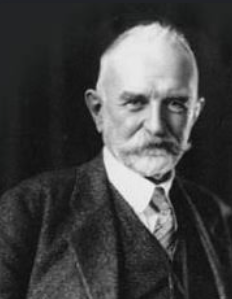
How does interaction with other people create a social self capable of role-taking and coordinated action?
Mead argued that the self develops through communication and the ability to take the role of the other. Children gradually move from copying gestures to imagining specific roles and then coordinating the expectations of many people at once. Language and shared symbols make this reflective self possible.
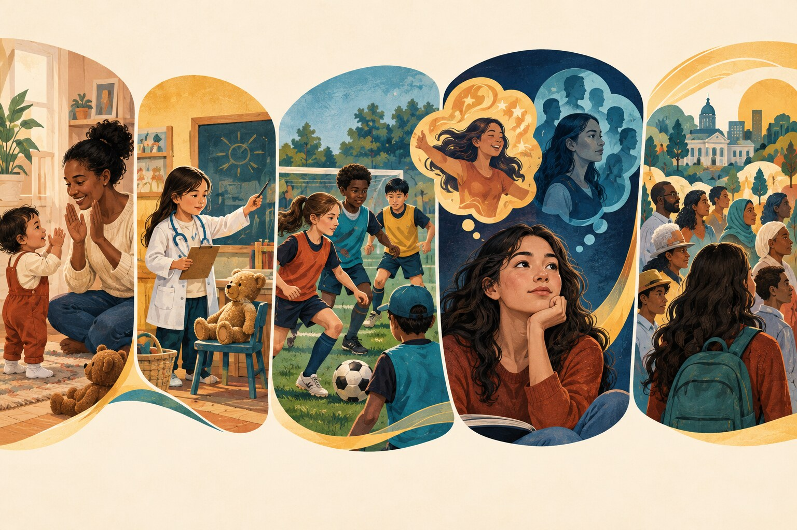
The picture moves from simple imitation toward increasingly complex perspective-taking. Each stage appears beside the explanation it represents rather than functioning as decoration.
The stages are analytic guides; development is not a rigid ladder completed at exactly the same age by every child.
Young children copy gestures, words, and actions without yet understanding a complete social role.
Children take the role of one significant other at a time—a parent, teacher, doctor, or character—and imagine that person’s viewpoint.
Children coordinate multiple roles, rules, positions, and goals at once. They learn that each participant’s action depends on the whole organized activity.
The spontaneous, creative, and not fully predictable response of the person to a situation. We become aware of the “I” after it acts.
The organized set of attitudes and expectations the person has internalized from others. The “Me” helps anticipate how an action may be interpreted.
The self is the continuing conversation between these two phases. The “I” provides novelty and agency; the “Me” brings the perspective of the social world into the person’s response. Neither operates alone: social life is creative action informed by learned expectations.
The generalized other is the organized viewpoint of the wider community or group. A ballplayer must understand not only one teammate’s role but the shared rules and expectations of the entire game. Likewise, a student anticipates what “people,” “the class,” or “the college” generally expect—even when no specific person is giving instructions.
People participate in several generalized others at once—family, profession, school, religion, neighborhood, or nation—and those expectations can conflict. The reflective self weighs these perspectives rather than merely obeying one audience.
How do people present themselves, coordinate performances, and protect identities during face-to-face interaction?
Goffman used the theater as an analytic metaphor for everyday life. People enter situations with roles, audiences, settings, expectations, and information to manage. A social performance does not have to be dishonest: even sincere behavior is shaped so that others can understand what is happening and respond appropriately.
The illustration connects public performance, private preparation, role changes, expressive equipment, audience expectations, and impression management in one scene.
We are both performers and audience members: we present information about ourselves while interpreting the performances of others.
The region where a performance is presented to an audience. Conduct, appearance, and setting are organized to fit the situation.
A region separated from the audience where performers can prepare, rehearse, contradict the public performance, or relax its demands.
Expected patterns of behavior connected to a position or situation. The same person may perform as instructor, supervisor, parent, friend, and customer.
Objects, clothing, furniture, documents, technology, and physical spaces help define what kind of situation is occurring.
Familiar sequences guide greetings, meetings, classrooms, ceremonies, service encounters, and other repeated interactions.
People select and control information to influence how an audience defines the situation and the identity of the performer.
Front stage behavior supports the definition of the situation offered to an audience. Appearance, manner, setting, and routine work together to make the performance readable.
Backstage is where performers can step out of character, rehearse, repair mistakes, store props, or discuss information withheld from the audience. It is not necessarily a person’s “true self”; it is another interaction region with its own expectations.
Impression management is the selective presentation of information so others will define the person and situation in a preferred way. It includes what people say, but also timing, clothing, posture, setting, credentials, digital profiles, and what is concealed.
This does not automatically mean deception. A physician’s calm manner, a teacher’s organized classroom, or a job applicant’s formal clothing may sincerely express competence. Trouble arises when performances conflict, audiences unexpectedly merge, or discrediting information becomes visible.
Performances are often collaborative. Coworkers, family members, and friends form teams that protect a shared definition of the situation. Audiences also cooperate by overlooking small mistakes, using tact, and helping others avoid embarrassment. When incompatible audiences meet or backstage information reaches the front stage, the performance may be disrupted.
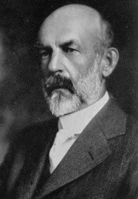
How do imagined reactions from other people become part of our self-concept?
Cooley described the self as developing through a lifelong social-mirror process. We imagine how we appear to another person, imagine that person’s judgment, and experience a feeling such as pride, confidence, shame, or embarrassment. That feeling can shape later behavior and identity.
We mentally place ourselves in another person’s position and picture what that person sees—our appearance, action, tone, competence, or character.
We interpret facial expressions, words, silence, past experience, and cultural expectations. This is a perceived judgment, not direct access to another person’s mind.
An imagined favorable judgment can strengthen confidence; an imagined unfavorable one can diminish it. The emotional response gives the social mirror its power.
The revised self-concept affects the next interaction, which creates new reactions to interpret. The looking-glass process therefore continues across the life course.
Developmental theories explain patterned changes in thinking, personality, relationships, identity, morality, and social participation. They are most useful when treated as lenses rather than rigid schedules. Biology matters, but development also unfolds through families, schools, peer groups, workplaces, cultures, institutions, and historical conditions.
This section expands the shorter explanations found in the coursebooks. Each theory receives its own sustained treatment, theory-specific visuals, application, and limits so students can compare ideas across SOC-210, SOC-213, and SOC-245.
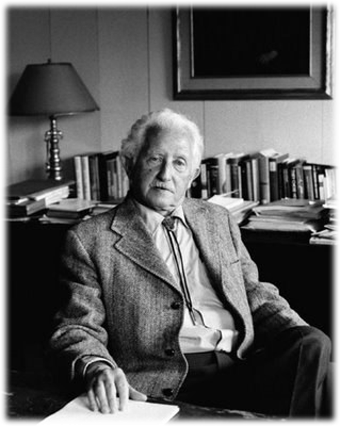
How do changing social relationships create developmental challenges and possibilities from infancy through old age?
Erikson proposed eight psychosocial stages, each organized around a tension or crisis. A crisis is not necessarily a catastrophe. It is a recurring developmental question—whether the world is trustworthy, whether the self is capable, or whether life has coherence—that becomes especially important during one period.
People do not permanently “pass” or “fail” a stage. Every outcome contains both sides of the tension, and later relationships can strengthen capacities that were insecure earlier. A trusting person still needs caution; an autonomous person still needs interdependence.
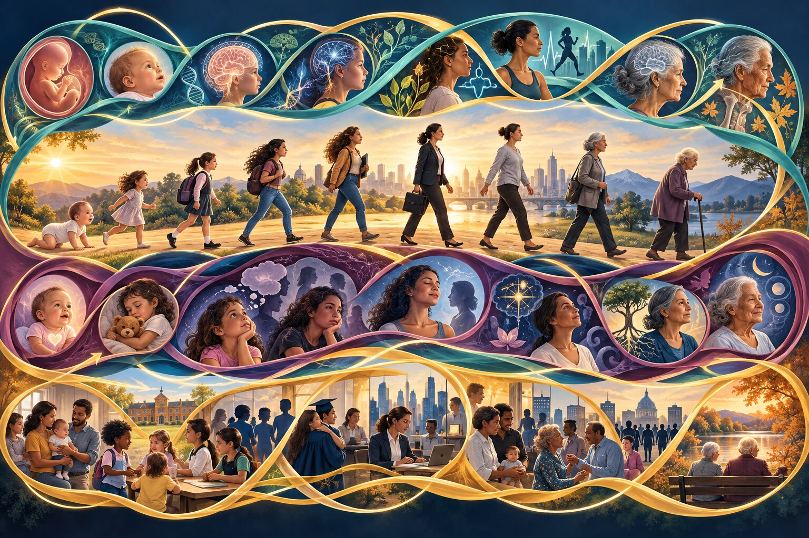
Biological forces include growth, brain development, puberty, health, disability, reproduction, and aging. They influence what tasks become possible or urgent.
Psychological forces include temperament, emotion, memory, coping, motivation, identity, and the meanings people give to experience.
Social-cultural forces include caregiving, family expectations, peers, schools, work, religion, media, inequality, historical events, and cultural definitions of a successful life.
Erikson called his approach psychosocial because inner development and social relationships continually shape one another. The same event can therefore affect two people differently, and the same person may revisit a crisis under new conditions.
Infancy · central relationship: caregiver · developing strength: hope
Infants depend on others for food, comfort, safety, and regulation. Predictable, responsive care supports a basic expectation that needs can be communicated and that the social world can be approached with hope.
Mistrust is not erased, nor should it be: some caution protects the child. The developmental task is a workable balance in which trust is strong enough to support attachment and exploration. Later reliable relationships can repair early insecurity.
Toddlerhood · central relationship: caregivers · developing strength: will
As language, movement, and self-control increase, children insist on doing things themselves. Supportive adults offer limited choices, safe boundaries, and patient practice so children experience themselves as capable agents.
Humiliation, impossible expectations, or punishment for ordinary mistakes can intensify shame and doubt. Autonomy does not mean total independence; it means acting with growing self-direction while accepting necessary help and limits.
Early childhood · central setting: family and play · developing strength: purpose
Children invent plans, ask questions, initiate play, and imagine roles. When adults guide rather than ridicule these efforts, children learn that they can act purposefully while considering other people.
Some guilt is socially useful because it helps a child recognize harm and repair relationships. Excessive guilt develops when curiosity, ambition, or ordinary mistakes are repeatedly treated as evidence that the child is bad.
School age · central settings: school, family, peers · developing strength: competence
Children compare their performance, practice culturally valued skills, and seek evidence that effort can produce mastery. Schools, teams, families, and peer groups determine which abilities receive recognition.
Repeated exclusion, inaccessible instruction, discrimination, or comparison with unrealistic standards can foster inferiority. The theory becomes sociological when we ask who receives opportunities to demonstrate competence and whose skills remain invisible.
Adolescence · central relationships: peers, family, institutions · developing strength: fidelity
Adolescents connect past experiences with possible futures while exploring values, work, relationships, beliefs, gender, culture, and group membership. Identity is a continuing sense of who one is across changing roles, not a single label chosen once.
Healthy exploration requires room to try commitments without irreversible punishment. Role confusion may appear when expectations conflict or when young people lack credible opportunities. Social inequality affects which possible selves seem available.
Young adulthood · central relationships: partners and close friends · developing strength: love
Intimacy involves mutual vulnerability, commitment, care, and the ability to coordinate one’s life with another person without losing the self. It can develop in friendship, partnership, and other close relationships.
Isolation may result from fear of vulnerability, exclusion, repeated loss, or social conditions that make stable connection difficult. Being single is not the same as being isolated, and partnership alone does not guarantee intimacy.
Middle adulthood · central concern: contribution beyond the self · developing strength: care
Generativity is investment in people, institutions, knowledge, work, creativity, or community that will outlast the individual. Parenting is one route, but mentoring, teaching, caregiving, organizing, and creating are also generative.
Stagnation describes narrowing concern toward the self and feeling disconnected from meaningful contribution. Opportunities for generativity depend partly on work conditions, health, family obligations, resources, and whether institutions value a person’s contribution.
Later adulthood · central task: life review · developing strength: wisdom
Integrity grows when a person can acknowledge both satisfaction and regret while accepting the life that was actually lived. Wisdom involves perspective, connection to generations, and recognition that no life is perfect.
Despair may emerge when losses feel meaningless, time seems too short for repair, or social isolation erases a person’s sense of contribution. Life review, storytelling, reconciliation, and participation can continue reshaping this balance.
Erikson widened developmental theory beyond childhood and placed identity and social relationships at the center of the life course. The framework helps students ask which developmental question is especially visible and what relationships or institutions support its negotiation.
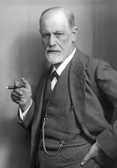
How does behavior emerge from conflict among impulse, moral demand, memory, and the practical requirements of social life?
Freud argued that much mental life operates outside conscious awareness. His structural model describes personality as a changing relationship among the id, ego, and superego. These are theoretical functions, not three people inside the mind and not literal brain regions.
The model is dynamic: the same person may feel an impulse, anticipate guilt, consider consequences, and produce a compromise action. Socialization enters the personality as caregivers’ rules, cultural ideals, and institutional expectations become internalized.
Pleasure principle · unconscious drives · immediate tension reduction
The id is the oldest and most instinctive part of the model. It contains bodily drives, wishes, and aggressive or pleasurable impulses. It seeks immediate gratification and does not evaluate law, morality, long-term consequences, or practical possibility.
The id is not the same as evil. Hunger, comfort seeking, play, sexuality, anger, and the wish to escape pain are basic sources of energy. Problems arise when immediate impulse overwhelms the person’s ability to consider reality and other people.
Reality principle · planning · mediation and compromise
The ego develops to manage the real world. It delays gratification, gathers information, predicts consequences, solves problems, and searches for a workable response to the id’s wishes, the superego’s demands, and external conditions.
A strong ego does not eliminate desire or morality. It coordinates them. It may decide when, where, and how a wish can be expressed—or conclude that it must be redirected. Much of the ego’s work is conscious, but Freud also placed some ego processes outside awareness.
Conscience · ego ideal · internalized social standards
The superego develops as rules, prohibitions, values, and ideals from caregivers and society become part of the self. Its conscience produces guilt or self-criticism after perceived wrongdoing; its ego ideal represents the person one believes they should become.
The superego can support empathy, responsibility, and long-term ideals. When rigid or punitive, however, it can produce excessive guilt, shame, or perfectionism even when the person has caused no harm.
Suppose a student sees an unattended exam answer key. The id is attracted to an easy advantage. The superego activates rules about honesty and an ideal of being a trustworthy student. The ego considers surveillance, consequences, available study time, and alternative ways to improve the grade. The final behavior reflects negotiation, not the victory of one permanent personality type.
Freud proposed that conflict can create anxiety. The ego may use defense mechanisms—such as denial, projection, displacement, rationalization, repression, or sublimation—to keep distress manageable. Defenses can be temporarily adaptive, but repeated use may distort reality or prevent direct problem solving. Later researchers have studied some defensive processes, although not always in Freud’s original form.
Freud’s lasting influence includes attention to unconscious processes, early relationships, internal conflict, symbolic meaning, and the possibility that people do not fully understand their own motives. His ideas shaped psychology, psychiatry, literature, media, and everyday language.
How do children actively build increasingly complex ways of understanding the world?
Piaget argued that children are not incomplete adults who simply absorb information. They construct knowledge through action. A schema is an organized way of understanding or acting. Children use assimilation when they interpret a new experience through an existing schema and accommodation when the experience requires the schema to change.
Cognitive growth often begins with disequilibrium: reality does not fit the current expectation. Exploration, feedback, language, instruction, and maturation help the child reorganize understanding. Piaget grouped these changing patterns into four broad stages.
Birth to about age 2 · knowing through senses and action
Infants learn through looking, touching, grasping, moving, and coordinating actions. They gradually distinguish self from environment and develop object permanence—the understanding that an object continues to exist when it cannot be seen.
Intentional problem solving emerges from repeated action. The infant who lifts a blanket to retrieve a hidden toy is mentally representing something beyond immediate perception.
About ages 2–7 · symbolic thought grows faster than logical operations
Children use language, drawings, and pretend objects to represent things that are absent. Their thinking can be imaginative and sophisticated, yet they may focus on one striking feature at a time—centration—and have difficulty mentally reversing a transformation.
Egocentrism in Piaget’s sense means difficulty coordinating another viewpoint with one’s own, not selfishness. Perspective-taking improves with social experience and cognitive growth.
About ages 7–11 · logical operations on tangible situations
Children can conserve quantity, classify objects, arrange them in order, coordinate several dimensions, and reverse steps mentally when the problem involves familiar or observable information.
They understand that pouring the same liquid into a taller glass changes its appearance but not its amount. Abstract propositions detached from experience may still be harder to evaluate systematically.
Beginning around age 11 or later · hypothetical and abstract reasoning
Adolescents may reason about possibilities, principles, variables, future conditions, and statements that are not directly observable. Hypothetical-deductive reasoning supports systematic testing: if a claim is true, what evidence should follow?
Not every person uses formal operations in every setting. Familiarity, education, culture, motivation, and the form of the task influence performance.
These accessible activities use the family-book approach: open a task, study the image, make a prediction, and then reveal the developmental meaning. They work with a mouse, touch screen, or keyboard and do not depend on JavaScript.
Predict first: After the bear is covered, will the infant lift the blanket and search?
Reveal the idea: Deliberate searching suggests object permanence—the infant can mentally represent an object that is no longer visible. Not searching on one trial does not prove the infant lacks the concept; attention, memory, motor skill, and familiarity also affect performance.
Predict first: Can the child use a block as a pretend phone and follow an imaginary story?
Reveal the idea: Pretend play shows symbolic representation. Preoperational children can use words and objects to stand for absent things even while logical operations and perspective-taking are still developing.
Predict first: After the same water is poured into the tall glass, will the child say the amount changed?
Reveal the idea: Conservation requires coordinating height with width and mentally reversing the pour. A younger child may center on the tall glass’s most noticeable feature; a concrete-operational child is more likely to explain that nothing was added or removed.
Predict first: Can the learner propose several explanations, change one variable at a time, and predict what evidence each explanation would produce?
Reveal the idea: Formal operational reasoning works systematically with hypotheses and possibilities, not only with the most visible feature of the immediate situation.
Piaget transformed the study of childhood by showing that children’s errors often reveal coherent ways of reasoning. Later research found more gradual change, greater variation across tasks, earlier competence when instructions are familiar, and stronger roles for teaching and culture than his stage model sometimes suggested.
Use the stages as descriptions of common patterns—not fixed intelligence levels, permanent labels, or reasons to underestimate a child.
How do people explain what makes an action right, and what kinds of moral reasoning do researchers recognize?
Preconventional reasoning emphasizes direct consequences: punishment, reward, and exchange. Conventional reasoning emphasizes approval, relationships, law, and maintaining social order. Postconventional reasoning evaluates laws through broader principles, rights, and a social contract that can be criticized or revised.
Kohlberg used moral dilemmas to examine the structure of justification. A person’s stage could not be inferred from one answer because people may reach the same decision for different reasons.
Gilligan challenged research that used mostly male samples and treated an abstract justice orientation as the highest moral voice. She highlighted an ethic of care: attention to relationships, vulnerability, context, responsibility, and preventing harm.
Care and justice should not be assigned rigidly to women and men. People can use both. The broader lesson is methodological: a theory can make one kind of reasoning appear immature when its measurements were designed to recognize another.
How do models, expected consequences, beliefs about ability, and social settings shape what people learn and perform?
Attention: the learner notices a model whose behavior is visible, relevant, prestigious, similar, or emotionally striking. Retention: the action is encoded in words, images, or a remembered sequence. Reproduction: the learner must possess or practice the skills needed to perform it. Motivation: expected rewards, punishments, values, and confidence influence whether the learned behavior is displayed.
Vicarious reinforcement occurs when people alter behavior after observing what happens to someone else. Learning can therefore occur without direct reward and without immediate imitation.
Select a process to see the question a learner must resolve.
Bandura rejected a one-way model in which the environment simply writes behavior onto a passive person. Reciprocal determinism describes ongoing influence among personal factors, behavior, and environment. A student’s confidence affects participation; participation changes skill and teacher feedback; that environment then alters confidence. Self-efficacy is the belief that one can organize and carry out the actions required in a particular situation. It affects effort, persistence, and recovery after setbacks—but it is not a substitute for resources or opportunity.
Are close bonds based only on feeding, or does comforting physical contact have developmental importance of its own?
In studies of infant rhesus monkeys, the Harlows compared a bare wire surrogate that could provide milk with a soft cloth surrogate that provided tactile comfort. The infants spent much more time clinging to the cloth surrogate and often used it as a secure base when exploring or when frightened.
The work challenged theories that reduced attachment to feeding. Warmth, touch, protection, and responsive contact are not decorative additions to care; they help regulate distress and support exploration. Severe isolation studies also showed that deprivation can profoundly disrupt social behavior.
How do young children use a caregiver when exploring, separating, becoming distressed, and reuniting?
Ainsworth’s observational work emphasized caregiver sensitivity: noticing signals, interpreting them reasonably, and responding promptly and appropriately. In the laboratory Strange Situation, researchers observe an infant across brief episodes involving play, an unfamiliar adult, separation, and reunion.
The reunion is especially informative. A securely attached infant can seek comfort and then return to exploration. Attachment classifications describe relationship strategies observed under particular conditions; they are not diagnoses, parenting grades, or permanent personality types.
Uses the caregiver as a secure base, may protest separation, and is comforted at reunion.
Minimizes visible proximity seeking and may avoid or ignore the caregiver at reunion, even though stress may still be present.
Shows intense distress and contact seeking but has difficulty settling, sometimes combining approach and resistance.
Shows contradictory, apprehensive, frozen, or disoriented behavior. This category was developed later by Mary Main and Judith Solomon.
How do immediate relationships, connections among settings, institutions, culture, and historical change jointly shape development?
Settings of direct participation: family, peers, school, childcare, workplace, neighborhood, or religious community.
Connections among microsystems, such as communication between family and school or tension between work and caregiving.
Settings the person may not enter but that affect daily life: a parent’s workplace, housing authority, media system, or school board.
Cultural values, laws, economic arrangements, ideologies, and patterned inequalities that organize the other systems.
Life transitions and historical change: migration, divorce, recession, war, a pandemic, technological change, or shifting policy.
In Bronfenbrenner’s later bioecological model, development is driven by recurring proximal processes—sustained interactions with people, objects, and symbols. Their effects depend on the person, context, and time. A classroom program therefore cannot be understood apart from the child’s relationships, the school–family connection, public funding, cultural expectations, and the historical moment.
Why does the same event affect people differently depending on its timing, their relationships, and the historical world they inhabit?
Elder’s life-course perspective connects biography and history. Historical time and place locate a cohort within particular opportunities and crises. Timing asks when an event occurs in a person’s life. Linked lives recognizes that changes to one family member alter others. Human agency recognizes choice while asking what options are actually available.
A trajectory is a long-term path, such as schooling, work, or family life; a transition is a role change within that path; and a turning point redirects the trajectory. Advantage and disadvantage can accumulate when early conditions alter later opportunities.
Early health, caregiving, housing, schooling, and family resources establish trajectories without fixing destiny. A parent’s work, migration, or hardship becomes part of the child’s linked life.
Education, first work, partnering, military service, or caregiving occur at socially expected times. The meaning of an “early,” “late,” or interrupted transition depends on culture and historical period.
Transitions into work, partnership, parenthood, or independent living can reinforce or redirect earlier pathways. Agency matters, but choices remain constrained by institutions and unequal resources.
Long-term trajectories in work and family intersect with caregiving, health, promotion, displacement, and community responsibility. Turning points can accumulate advantage or interrupt established plans.
Retirement, grandparenthood, loss, disability, and continued work are shaped by earlier trajectories and present policy. Linked lives remain active as generations exchange care, resources, memory, and obligation.
What happens when children labeled by an institution are moved into a more responsive social environment?
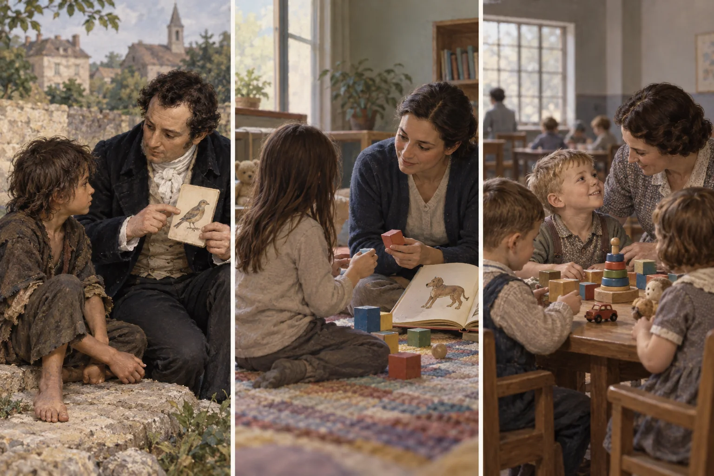
In early Iowa research, a small group of institutionalized children were moved into wards where older girls and staff provided more consistent attention, conversation, play, and stimulation. Their development was compared with children who remained in the original institution. Follow-up reports described much better outcomes for many in the enriched group.
The study challenged the era’s tendency to treat low test performance as fixed heredity. It suggested that responsive relationships and stimulation can change developmental trajectories, especially when deprivation has limited what a child has been able to learn and display.
Which features of emotional expression may be widely shared, and how does culture shape what people show and interpret?
Ekman’s cross-cultural research argued that several facial expressions—often summarized as happiness, sadness, anger, fear, surprise, and disgust—are recognized across many populations. With Wallace Friesen, he developed the Facial Action Coding System, which describes visible muscular movements rather than guessing the emotion behind them.
Culture also supplies display rules: norms about when an expression should be intensified, muted, hidden, or replaced. People learn which emotions are acceptable in funerals, classrooms, workplaces, families, ceremonies, and public performances.
How can roles, systems, and institutional permission make harmful conduct seem normal—or make resistance harder?
Zimbardo’s Lucifer Effect describes how ordinary people may participate in harmful conduct when a setting authorizes domination, diffuses responsibility, dehumanizes targets, supplies powerful roles, and discourages dissent. The framework shifts attention from a few “bad apples” to the bad barrel—the rules, incentives, leadership, and culture surrounding action.
This is not a claim that situations mechanically transform everyone. It is a prompt to examine who designed the setting, which actions were rewarded, what alternatives were visible, and why some people complied while others resisted.
The lecture sequence you remembered combines a systemic setup with a series of social processes. An ideology first identifies a threatening “enemy.” Language and imagery strip that group of individuality and humanity. A legitimate-seeming authority then authorizes, rewards, or tolerates harm. The result is not automatic evil; it is a setting in which ordinary moral restraints become easier to bypass.
A limited action appears manageable. Each later step can be framed as only a little more than what has already been accepted.
Targets become numbers, animals, contaminants, enemies, or stereotypes rather than complex people worthy of moral concern.
Uniforms, masks, anonymity, and immersion in a role make personal identity and self-monitoring less salient.
Responsibility is divided across a group or transferred upward: “everyone participated” or “I only followed the procedure.”
A leader defines the action as necessary, legitimate, professional, patriotic, or required and claims the right to direct it.
Group norms make doubt feel disloyal or abnormal. Silence is misread as agreement, and dissenters risk exclusion.
Bystanders look away, wait for someone else, or treat the conduct as inevitable, allowing the system to continue.
In 1971, male college volunteers were assigned to guard or prisoner roles in a simulated prison at Stanford University. Planned for two weeks, the study ended after six days amid distress, degrading treatment, and concern about the researchers’ loss of objectivity. Zimbardo served as both lead researcher and prison superintendent, blurring observation with institutional leadership.
The famous interpretation emphasized how quickly institutional roles, anonymity, unequal power, and a closed setting could produce submission and abuse.
The study lacked a proper control group; the sample was small and self-selected; guard behavior varied; researchers supplied expectations and encouragement; and participant performances and resistance complicate the claim that roles alone caused the outcome.
Why might people continue an action they find troubling when an apparently legitimate authority accepts responsibility and asks them to proceed?
Milgram recruited adults for what they believed was a study of learning and punishment. The “teacher” was instructed to administer increasingly severe shocks after incorrect answers; the “learner” was a confederate, and the machine delivered no real shocks. In the best-known baseline condition, 65% continued to the final 450-volt switch, even though many participants showed intense tension and protested.
The finding is not simply that people are cruel. The procedure used an authoritative institution, a confident experimenter, incremental steps, prior commitments, physical separation from the learner, and standardized prompts that framed continuation as a duty.
Obedience was stronger when the authority and institution appeared credible and entitled to direct the task.
Bringing the learner closer made the consequences harder to treat as abstract; separating the authority weakened direct pressure.
Seeing peers refuse supplied a definition of the situation in which resistance became legitimate and possible.
Why might a person publicly agree with a unanimous group even when the group’s answer conflicts with clear visual evidence?
In Asch’s 1950s line-judgment studies, a participant answered after several confederates who sometimes gave the same obviously incorrect response. Across the critical trials, participants conformed to the incorrect majority about one-third of the time, and roughly three-quarters conformed at least once. Yet many responses remained independent, and about one-quarter of participants never conformed.
Normative influence occurs when people go along to avoid rejection or awkwardness. Informational influence occurs when they treat others as evidence that their own judgment may be wrong. Interviews suggested that participants experienced the situation in different ways rather than sharing one motive.
One dissenter sharply reduces pressure—even when the dissenter gives a different wrong answer—because the majority no longer defines the only acceptable position.
Speaking in front of the group creates more normative pressure than recording an answer privately.
Pressure rises as a small majority grows, then levels off; an enormous crowd is not required.
When evidence is unclear or stakes are high, people may look to others for information as well as acceptance.
How can a family’s recurring relationships maintain—or transform—a problem that appears to belong to only one person?
Family systems approaches, associated with theorists including Murray Bowen and Salvador Minuchin, treat the family as an interdependent whole. A change in one member affects others, whose responses feed back into the original behavior. Circular causality asks how A influences B and B then influences A, replacing a simple search for the one person who “started it.”
Homeostasis is the system’s tendency to preserve familiar patterns, even painful ones. Feedback can stabilize a pattern or amplify change. Symptoms may therefore perform a relational function without being deliberate or anyone’s fault.
Partner, parent–child, sibling, and intergenerational relationships have different tasks and forms of authority.
Rules of access and closeness may be clear and flexible, overly rigid and disengaged, or diffuse and enmeshed.
Tension between two people may draw in a third, temporarily stabilizing the pair while relocating the strain.
Bowen emphasized remaining emotionally connected while sustaining a thoughtful, distinct sense of self.
Births, adolescence, partnering, separation, caregiving, migration, loss, and aging require roles and boundaries to reorganize.
The loop does not declare both parties equally powerful or responsible. It reveals points where the pattern could change: a different response, clearer boundary, direct conversation, added support, or reduced outside stress.
Select an intervention to see how one changed response can alter the feedback loop.
How does a very large pool of possible partners become a much smaller field of people who are likely to meet and form lasting relationships?
Filter theory describes partner selection as progressive narrowing. Propinquity or proximity affects who is available to meet. Social filters such as age, education, class, race, religion, and networks then shape contact and approval. Interaction reveals shared values and role expectations. Later, complementary needs, communication, attraction, and compatibility influence whether the relationship continues.
Homogamy—partnering with someone socially similar—is partly preference and partly structure. Schools, workplaces, neighborhoods, algorithms, religious organizations, and friendship networks place some people together and keep others apart.
How can intimacy deepen through a repeating cycle of communication, trust, reliance, and need fulfillment?
Rapport begins with ease, understanding, and a sense of connection. Self-revelation deepens as partners disclose experiences, values, hopes, and vulnerabilities. Mutual dependency grows when each person becomes part of the other’s routines and support. Personality-need fulfillment occurs when the relationship meets important emotional needs such as belonging, affirmation, security, or recognition.
The wheel can rotate repeatedly rather than ending after four steps. Increased rapport may support deeper revelation; fulfilled needs may strengthen trust; betrayal, unequal dependence, or poor communication may interrupt the cycle.
Select a process to see how it can strengthen—or interrupt—the next part of the cycle.
Why can people use the word love while experiencing and expressing it in very different ways?
Eros emphasizes passionate attraction and an idealized beloved. Ludus treats love playfully and may avoid exclusivity or deep commitment. Storge grows from friendship, familiarity, and steady affection. Lee treated these as primary styles rather than permanent personality types.
Blends produce secondary styles: mania combines eros and ludus into possessive, anxious intensity; pragma combines ludus and storge into practical compatibility; and agape combines eros and storge into giving, selfless devotion. People and relationships may express several styles and change over time.
Passion, attraction, romantic idealization, and a strong desire for emotional and physical closeness.
Play, flirtation, variety, and limited commitment. A ludic style may emphasize enjoyment while avoiding exclusivity or vulnerability.
Friendship, familiarity, shared history, and affection that grows gradually rather than beginning with intense passion.
A blend of eros and ludus characterized by intense preoccupation, insecurity, jealousy, and repeated need for reassurance.
A blend of ludus and storge that evaluates practical compatibility, shared plans, values, resources, and long-term fit.
A blend of eros and storge emphasizing generous concern for the beloved’s welfare. Care remains healthiest when it includes boundaries and mutual dignity.
How do intimacy, passion, and commitment combine into different relationship experiences?
Intimacy is emotional closeness, knowledge, trust, and support. Passion includes attraction, arousal, and motivational intensity. Commitment includes the short-term decision to love and the longer-term decision to maintain the relationship.
Different combinations create forms such as liking, infatuation, empty love, romantic love, companionate love, fatuous love, and consummate love when all three are present. Components may rise or fall at different rates across the life course.
Liking and emotional closeness without passion or long-term commitment.
Infatuation driven by attraction without developed intimacy or commitment.
Empty love sustained by decision without present intimacy or passion.
Romantic love.
Companionate love.
Fatuous love.
How do expectations about closeness, availability, and rejection shape behavior in adult relationships?
Building on Bowlby and Ainsworth, adult attachment research examines internal working models: learned expectations about whether others will be available and whether the self is worthy of care. Patterns can vary across relationships and change through corrective experiences, therapy, reliable partners, and changing circumstances. They should not be inferred from one disagreement or used as social-media labels.
Closeness and autonomy can coexist. A securely attached person generally expects availability, communicates needs, and can use support without treating ordinary distance as abandonment.
Fear of rejection can produce hyperactivation: vigilance, repeated reassurance seeking, protest, or difficulty settling after a threat to the relationship.
Discomfort with dependence can produce deactivation: minimizing needs, withdrawing during conflict, or relying heavily on self-sufficiency to manage vulnerability.
A wish for closeness combines with distrust or fear, producing approach–withdrawal patterns. The person may seek connection and then retreat when intimacy feels dangerous.
Accessibility commitment. This coursebook was designed and reviewed using WCAG 2.1 Level AA and ADA Title II accessibility principles. It uses semantic headings, keyboard-operable controls, visible focus, alternative text, labeled controls, readable type, responsive layouts, and reduced-motion support. Accessibility is an ongoing process; no automated or editorial review can guarantee access for every person, device, or assistive technology.
Disability access and accommodations. If a page, image, chart, video, download, or activity creates a barrier, contact the instructor and the college Disability Services/Accessibility Office using the current syllabus or college website. An accessible alternative or reasonable accommodation will be provided as promptly as possible and without penalty.
Practice—not grades. Interactives in this book are ungraded practice unless Canvas explicitly says otherwise. Core ideas also appear in text, captions, tables, explanations, and feedback. Students may skip an interaction or request an equivalent text-based activity without a grade penalty.
Privacy. The coursebook does not ask students to create an account or submit identifying information. Practice responses remain on the device unless a linked tool clearly states otherwise. Submit graded work only through Canvas or another institutionally approved system.
Seeing Theory was written by Caroll Hodgson. Use the reference below when citing the complete online book in APA 7th edition.
Hodgson, C. (2026). Seeing theory: A visual sociology companion [Open educational resource]. https://seeing-theory-companion.carollhodgson.chatgpt.site
The title is written in sentence case and italicized. A period does not follow the URL.
(Hodgson, 2026)
Use this form when the author’s name does not appear in the sentence.
Hodgson (2026)
Use this form when Caroll Hodgson’s name is part of the sentence.
Because this online book does not use fixed page numbers, APA recommends helping the reader locate a quotation with the section heading and paragraph number.
(Hodgson, 2026, “The Sociological Imagination” section, para. 2)
Count the paragraphs within the named section. If the heading is long, use a shortened version inside quotation marks.
Authority, conformity, and the power of situations
Zimbardo, Milgram, and Asch asked different questions about social influence. Zimbardo emphasized roles, institutions, and systems; Milgram examined obedience to legitimate authority; Asch studied pressure from an incorrect majority. Together they show that conduct is shaped not only by personality but also by definitions of the situation, group unanimity, institutional legitimacy, gradual commitment, surveillance, and opportunities to dissent.